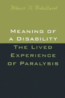

A self-study of paralysis and meaningful interaction
A self-study of paralysis and meaningful interaction


 A self-study of paralysis and meaningful interaction
A self-study of paralysis and meaningful interaction

|  |
Meaning of a DisabilityThe Lived Experience of ParalysisAlbert B. Robillardpaper EAN: 978-1-56639-676-9 (ISBN: 1-56639-676-X) |
"[Robillard] writes with great preciseness and accuracy.... This book should be read by those working with people with disabilities, those teaching in the area of Disability Studies, and by people with disabilities."
—Disability Studies Quarterly
With his loss of speech, Robillard was forced to communicate through a lip-reading system developed by his wife and student assistants. Restricted by this form of communication and his paralysis, he soon learned the frustrations of making his meaning known. Hospital nurses wrongly anticipated his words. Those who translated for him inevitably distorted his meaning. Most of all, the casual pace of conversational give-and-take was disrupted. Old friends would leave before Robillard could provide the expected interactional response.
Finding himself isolated due to his lack of both mobility and vocalization, Robillard threw himself into his academic work and began to develop settings and methods where he could satisfactorily interact with others. A researcher and writer experienced in describing the bodily and verbal methods used to coordinate and construct the most ordinary of social forms, Robillard joins in this book both his years of sociological training and his time with illness to talk with moving and illuminating analysis about a broad range of matters. Moving gracefully from examinations of narratives about disability and illness, the stigmatizing things that healthcare providers unwittingly say to their patients, and communication problems in the intensive care unit, to more personal reflections on anger, isolation, and stories of tragedy, Robillard also discusses disability in the workplace and such seemingly simple topics as computers and vacations. Meaning of a Disability is the personal story of a highly trained observer forced to confront simultaneously the limits of the disabled person's social world and the unspoken assumptions about meaningful interaction—as he struggles with the daily difficulties of maintaining his identity.
Meaning of a Disability will interest a wide audience including healthcare professionals, disabled people, and caretakers as well as academics studying ethnomethodology, health and illness, conversation, symbolic interaction, storytelling, and most aspects of lived experience.
Excerpt available at www.temple.edu/tempress
Read a review from Qualitative Sociology, Volume 24.3 (2001), written by Mark Peyrot (pdf).
Acknowledgments
1. Telling the Story
2. You Are Lucky Your Wife Stuck with You
3. Communicating in Intensive Care
4. Anger
5. Isolation
6. Bionic Man
7. Can He Think?
8. The Trip
References
Index
 | Albert B. Robillard is Professor of Sociology and Pacific Island Studies at the University of Hawaii at Manoa and author of Social Change in the Pacific Islands. |
© 2015 Temple University. All Rights Reserved. This page: http://www.temple.edu/tempress/titles/1343_reg.html.